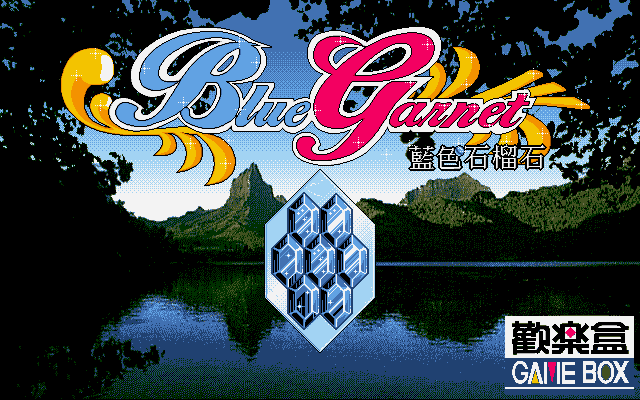
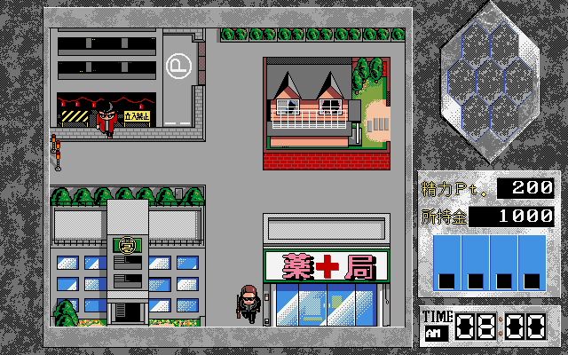
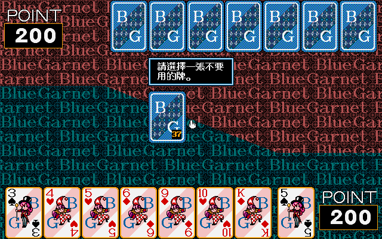

名稱：藍色石榴石 (Blue Garnet，中文版) 簡介：Trush 1996年出品的18禁卡牌戰鬥之冒險遊戲，由歡樂盒中文化並代理發行 [待補]。


保護：光碟，破解碼不明（放入光碟才有背景音樂）。 說明： 可出的牌型（遊戲會提示）： 1.單張7 2.三張以上同號牌，或三張以上連號之同花色牌。對方打出的廢牌，和我方牌可組成前述之 牌型者，亦可出牌。 3.和桌面上已出的連號牌繼續連號之同花色牌，或和同號牌同號之牌，均可出牌。 前述牌型出完後（或無牌可出），便丟棄一張廢牌，改抽另一張牌。第一輪固定須出廢牌。 先出完牌者勝（最後一張必定是廢牌），輸家依剩餘牌之牌面數字進行扣分，J～A均扣10分。 分數先被扣完者淘汰。